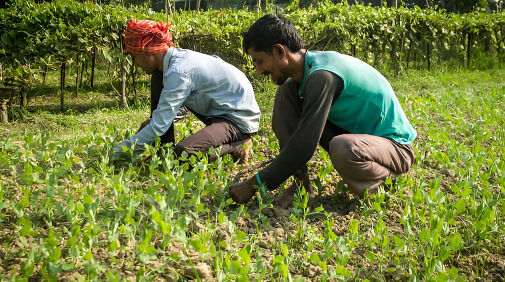

Agriculture is the primary source of food production for the world's population. It ensures that people have access to a reliable and consistent food supply, which is essential for human survival and well-being. Agriculture not only produces staple crops like grains, fruits, and vegetables but also provides essential nutrients necessary for human health. A diverse and nutritious diet, largely supplied by agriculture, is crucial for combating malnutrition and promoting overall well-being. Indian agriculture is of paramount importance due to its significant contributions to the economy, food security, employment, and rural development. Here's why Indian agriculture holds such a vital position.
Indian agriculture is responsible for producing a vast array of food crops, including grains (rice, wheat, maize), pulses, fruits, vegetables, and spices. Ensuring food security for a population of over 1.3 billion people is a significant challenge, and Indian agriculture plays a central role in meeting this challenge. Agriculture is the largest source of employment in India, directly employing over half of the country's workforce. The sector provides livelihoods to millions of farmers, agricultural laborers, and rural households, contributing to poverty reduction and socio-economic development. Investments in agriculture, infrastructure, irrigation, and rural electrification contribute to improving living standards, education, healthcare, and access to basic amenities in rural areas. Agriculture remains a crucial sector of the Indian economy, contributing to the Gross Domestic Product (GDP) and providing livelihoods to a large portion of the population. India is one of the world's leading producers and exporters of agricultural commodities such as rice, spices, fruits, vegetables, and cotton. Agriculture exports generate foreign exchange earnings and contribute to the country's trade balance's economy.
Sustainable agricultural practices can contribute to environmental conservation by promoting soil health, biodiversity, and water conservation. Agriculture has the potential to mitigate climate change through carbon sequestration, agroforestry, and other climate-smart practices. Adoption of practices such as organic farming, agroforestry, and water-efficient irrigation systems can help mitigate environmental degradation and climate change impacts. Agriculture is a significant component of international trade, with countries exporting and importing various agricultural products. It contributes to economic interdependence and fosters cooperation among nations.
Despite the growth of other sectors like industry and services, agriculture continues to be the backbone of India. Agriculture is a source of renewable resources such as biomass for energy production, fiber for textiles, and materials for construction. It also plays a role in resource management, including water conservation and land stewardship. Agriculture is deeply intertwined with human culture and history. Traditional farming practices, crop varieties, and livestock breeds reflect the diversity of cultures and societies around the world. Preserving agricultural heritage is essential for maintaining cultural identity and biodiversity.
In summary, Indian agriculture is not only crucial for the country's economic growth but also for ensuring food security, alleviating poverty, promoting rural development, preserving cultural heritage, and safeguarding the environment. Sustainable and inclusive development of the agricultural sector is essential for India's overall socio-economic progress and well-being.
Overall, agriculture is not just about growing crops and raising livestock; it is a fundamental pillar of human civilization, supporting food security, economic development, environmental sustainability, and cultural heritage.
Conventional farming and Organic farming represent two distinct approaches to agricultural production, each with its own set of practices, philosophies, and impacts. Conventional farming typically involves the use of synthetic chemicals, such as pesticides and fertilizers, to maximize yields and control pests and diseases. It often relies on technological innovations, mechanization, and genetic engineering to boost productivity. It can lead to soil degradation due to the heavy use of synthetic chemicals, which may disrupt soil microbial communities, reduce organic matter content, and increase erosion risk. It may have a greater environmental impact due to the potential for chemical runoff, soil erosion, and habitat destruction. However, it can also benefit from technological advances that improve efficiency and reduce resource usage. It often leads to higher yields but may come with trade-offs in terms of environmental sustainability and long-term soil health.
The impact of pesticides on human health can be significant, depending on factors such as the type of pesticide, exposure levels, duration of exposure, and individual susceptibility. Long-term exposure to low levels of pesticides has been associated with various chronic health problems, including cancer, neurological disorders, reproductive issues, birth defects, hormone disruption, immune system disorders, and respiratory ailments. Pesticides can target specific organs or systems in the body, leading to damage or dysfunction. For example, certain pesticides have been linked to liver and kidney damage, as well as adverse effects on the nervous system, endocrine system, and reproductive organs. Exposure to pesticides during pregnancy or early childhood can have harmful effects on fetal development and child health. Prenatal exposure to pesticides has been associated with low birth weight, developmental delays, cognitive impairment, and increased risk of childhood cancers. Inhalation of pesticide fumes, dust, or aerosols can irritate the respiratory tract and exacerbate respiratory conditions such as asthma, bronchitis, and chronic obstructive pulmonary disease (COPD). Some individuals may develop allergic reactions or sensitivities to certain pesticides, leading to skin rashes, itching, hives, or respiratory symptoms upon exposure. Agricultural workers, pesticide applicators, and others involved in pesticide handling are at higher risk of exposure to pesticides and may face occupational health hazards if proper safety precautions are not followed. Pesticides can contaminate air, water, soil, and food, leading to indirect exposure for the general population. Residues of pesticides in food and water sources can contribute to chronic low-level exposure over time. It's important to note that the impact of pesticides on human health can vary depending on factors such as the type of pesticide (e.g., herbicides, insecticides, fungicides), route of exposure (e.g., ingestion, inhalation, dermal contact), and individual susceptibility (e.g., age, genetic factors, underlying health conditions).
Organic farming has several positive impacts, not only on the environment but also on human health, biodiversity, and rural economies. Organic farming emphasizes the use of natural and holistic methods to cultivate crops and raise livestock. It focuses on enhancing soil health, biodiversity, and ecological balance. Organic farming practices aim to improve soil health by promoting microbial activity, enhancing soil structure, and reducing erosion. Techniques such as crop rotation and cover cropping help maintain soil fertility and structure over the long term. Organic farming is often perceived as more environmentally friendly because it typically has lower chemical inputs and promotes biodiversity. It aims to minimize pollution, conserve water, and support wildlife habitats. Organic farms tend to support greater biodiversity compared to conventional farms, thereby creating habitats that support a diverse range of species, including pollinators and natural predators of pests. By choosing organic products, consumers can minimize their intake of pesticide residues in food and reduce potential health risks associated with chemical exposure. Organic farming practices such as organic soil management and conservation tillage help reduce runoff of pollutants into water bodies. By minimizing the use of synthetic fertilizers and pesticides, organic farms contribute to cleaner waterways and healthier aquatic ecosystems. Organic farming can play a role in mitigating climate change by promoting carbon sequestration in soils, reducing greenhouse gas emissions from synthetic fertilizer production and application, and fostering agro-ecosystems that are more resilient to extreme weather events. Studies suggest that organic foods may contain higher levels of antioxidants and beneficial micronutrients.
Organic farming can provide economic opportunities for small-scale farmers, especially in rural areas. By tapping into niche markets for organic products, farmers may achieve higher prices for their produce, improve their livelihoods, and contribute to local economies.
Overall, organic farming offers a holistic and sustainable approach to agriculture that promotes environmental stewardship, biodiversity conservation, and human well-being. Its positive impacts on ecosystems, communities, and public health make it an important alternative to conventional agriculture.